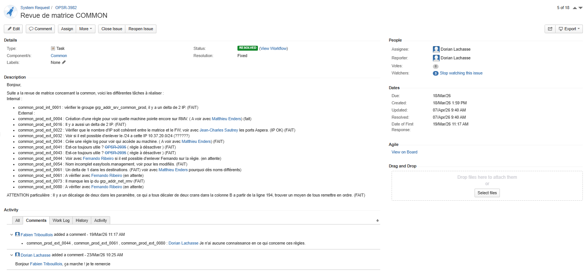
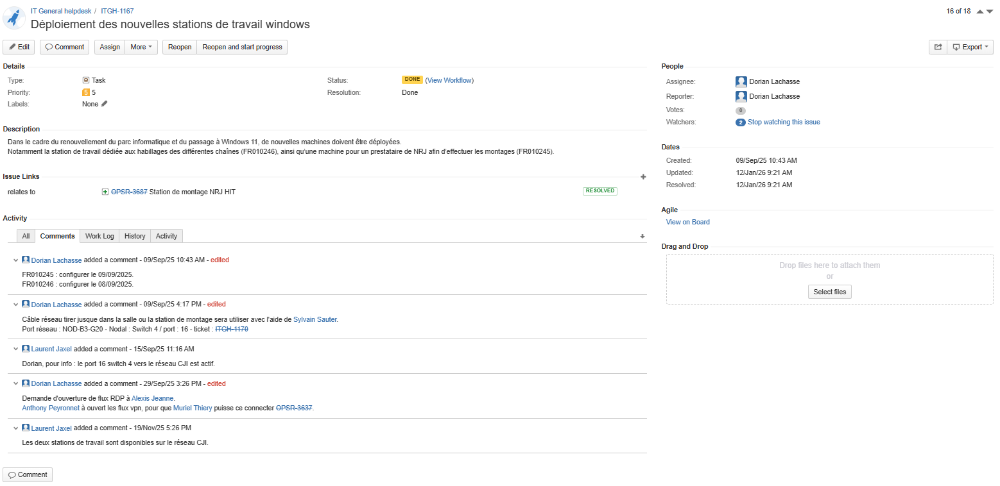
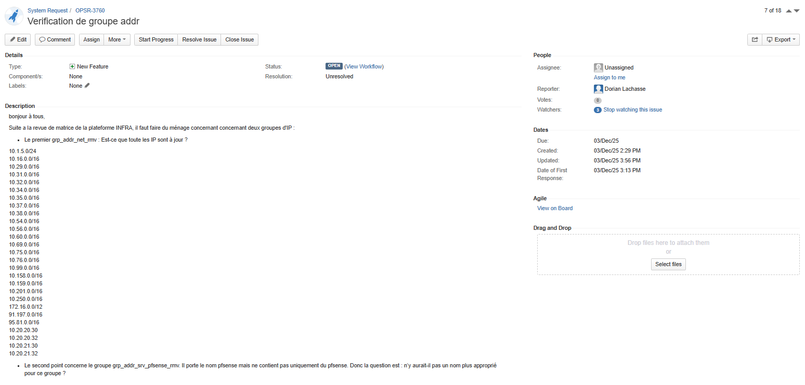

Support utilisateur & ticketing JIRA
Contexte
Dans le cadre de mon alternance chez Cognacq-Jay Image, j’ai participé au support utilisateur via l’outil de ticketing JIRA. Les demandes pouvaient concerner des incidents, des demandes d’accès, des vérifications de groupes, des déploiements de postes ou encore des actions liées à Active Directory.
Cette activité m’a permis de prendre en charge des tickets utilisateurs, de suivre leur avancement, de communiquer avec les demandeurs et de clôturer les demandes une fois le service rétabli.
Objectifs
- Collecter et qualifier les demandes utilisateurs
- Assurer le suivi des tickets dans JIRA
- Traiter les demandes courantes de support
- Participer à la gestion des comptes Active Directory
- Préparer et configurer des postes utilisateurs
- Maintenir les PC de rebond utilisés par les techniciens
Environnement technique
Travaux réalisés
Qualification des demandes
Analyse du contenu des tickets afin de comprendre le besoin utilisateur, identifier le type de demande et déterminer les actions à réaliser.
Traitement des incidents
Prise en charge de demandes variées : réinitialisation de mots de passe, vérification de groupes, assistance utilisateur et demandes liées aux services système ou réseau.
Préparation de postes
Participation au déploiement et à la configuration de postes Windows pour les nouveaux utilisateurs ou pour des besoins spécifiques de production.
Suivi et clôture
Suivi des échanges dans JIRA, ajout de commentaires, mise à jour du statut et clôture des tickets lorsque la demande est résolue.
Exemples de tickets JIRA
Revue de matrice COMMON
Exemple de ticket lié à une revue de matrice, avec plusieurs actions de vérification sur des groupes, des règles et des accès. Ce type de ticket demande de suivre plusieurs tâches et de documenter les retours dans les commentaires.

Déploiement de nouvelles stations de travail Windows
Exemple de ticket concernant le déploiement de nouvelles stations de travail. Le suivi inclut la configuration des machines, les échanges avec les équipes concernées et la validation finale de disponibilité des postes.

Vérification de groupe d’adresses
Exemple de demande liée à la vérification de groupes d’adresses IP. Ce type de ticket nécessite de comprendre le besoin, vérifier les informations demandées et orienter la demande si nécessaire.

Résultats obtenus
Impact utilisateur
- Retour du service à la normale dans la majorité des cas
- Meilleur suivi des demandes grâce aux tickets
- Communication claire avec les utilisateurs
- Traçabilité des actions réalisées
Impact entreprise
L’utilisation de JIRA permet de structurer le support, d’assurer le suivi des incidents et de conserver un historique des interventions. Cela facilite la collaboration entre les techniciens et améliore la qualité du service rendu.
Compétences mobilisées
- Support aux utilisateurs
- Gestion des incidents et des demandes
- Administration système et réseau
- Utilisation d’un outil de ticketing
- Gestion de comptes et groupes Active Directory
- Communication et suivi utilisateur
Bilan personnel
Cette mission m’a permis de progresser dans la prise en charge des demandes utilisateurs et dans l’utilisation de JIRA. J’ai également renforcé mes compétences sur Active Directory et sur le suivi des interventions en environnement professionnel.